| 日付 | 2022年1月9日（日） |
|---|---|
| 山域 | 駿河 |
| メンバー | 家族（妻、長女・10歳、長男・8歳） |
| 山行形態 | 子連れ日帰り |
| アクセス | 車 |
| ルート (Map) | 俵峰駐車スペース (8:35) - (8:51) 登山口 - (9:21) 引落峠 - (9:46) 大滝 (10:03) - (10:24) 一本杉 - (10:38) 富士見岳 (11:26) - (11:57) 駒引峠 - (13:15) 俵峰駐車スペース |
先週は雪が降ったので、比較的雪の影響が少なそうな南の山に登ることにする。
竜爪山を中心に考えていたが、近くに大滝という氷瀑の存在を知る。
どちらにも行くのは厳しそうなので、今回は大滝と近くの富士見岳を周回することにする。
俵峰の集落の空き地に車を停める。標高470m。
朝早くから多くの車が停まっている。
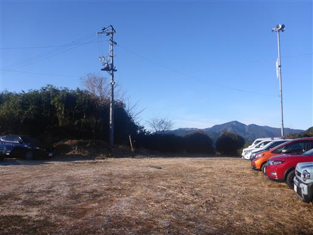
周囲は霜で真っ白だ。
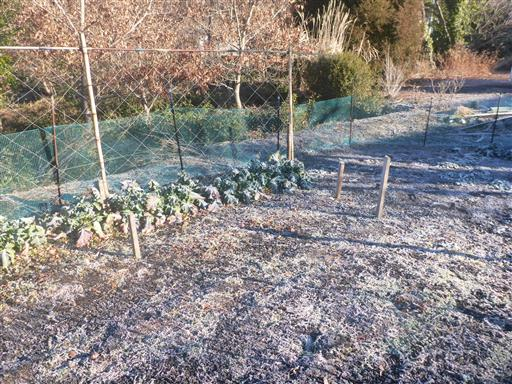
静岡と言えばお茶畑。

軒下に巨大なハチの巣を発見。
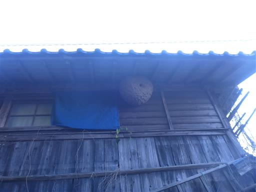
集落を抜けて登山口に到着する。
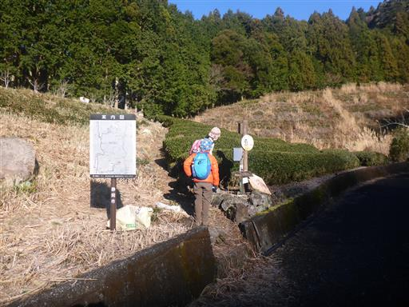
森の中の登山道。雪は全く見られない。
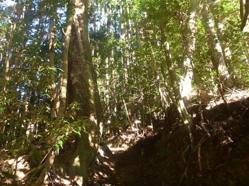
ところどころトラバース道で、道が細い場所がある。
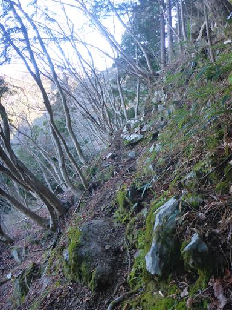
ロープを持って慎重に。
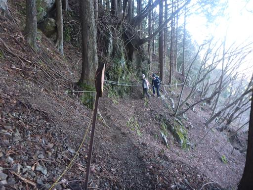
登山道に少し雪が出てくる。
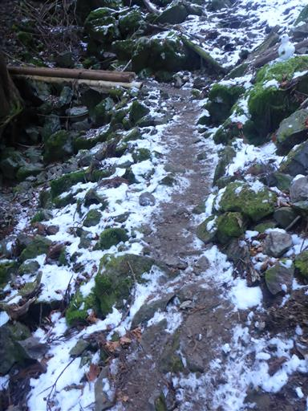
大滝に到着。
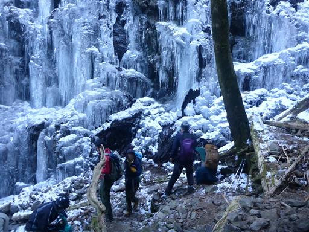
見事な氷瀑。滝がきれいに凍り付いている。
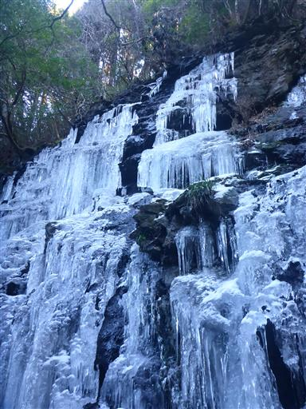
下から見上げる。巨大なつららだらけだ。
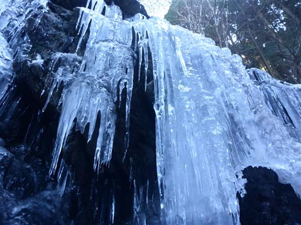
つらら一本一本が光り輝いている。
駐車場に多くの車が停まっていたのは、この氷瀑見学が主目的だ。
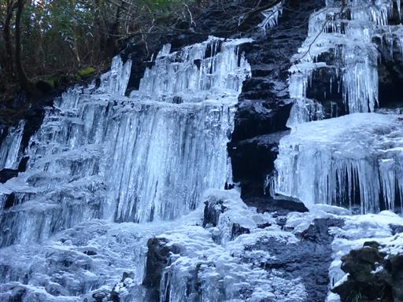
少し上から滝を眺める。13年前にここを歩いたときの記録が残っているが、
その時は氷瀑の存在を知らず、大滝はチラ見しただけでスルーしていた。
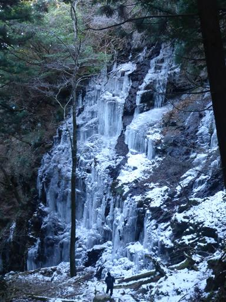
滝の上流部分。チョロチョロと水が流れている。
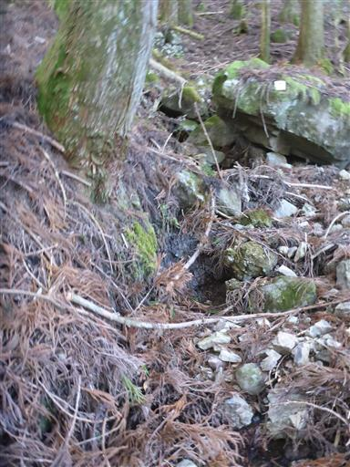
稜線に近づくと陽の光が見えてくる。
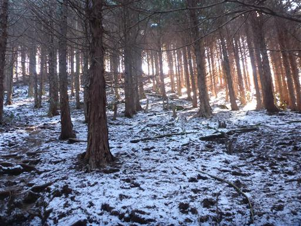
ここからは気持ちの良い稜線歩き。
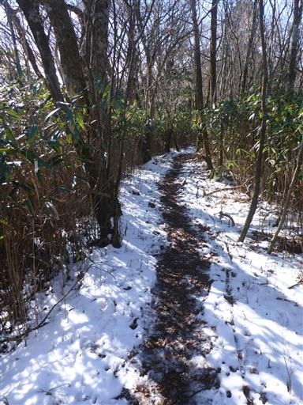
南下する道なので、登りは雪道、下りは雪無しだ。
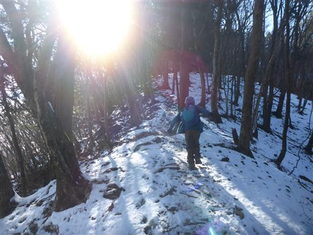
富士見岳に到着する。標高1078m。
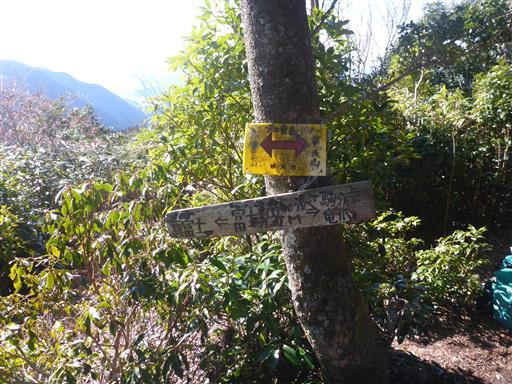
富士見岳と言いながら、富士山は登山道の奥にちらっと見える程度だ。

南の展望が良い。安倍川周囲の低い山々が並んでいる。
左の方は静岡市街だ。
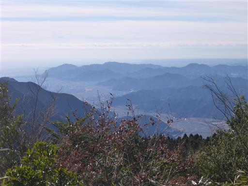
安倍奥東山稜の一番先にある竜爪山が目立っている。
南の方では一際立派な山だ。行ってみたいがちょっとここから往復は遠そうだ。
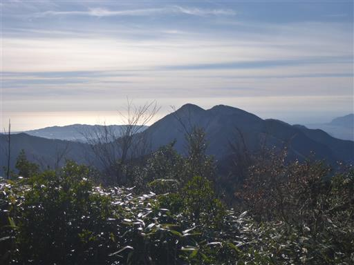
木の隙間から南アルプスの白い峰々がチラッと見える。
正面は聖岳、右は赤石岳だ。
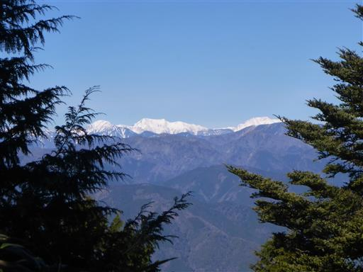
こちらは大無間山。2008年に登った懐かしい山だ。
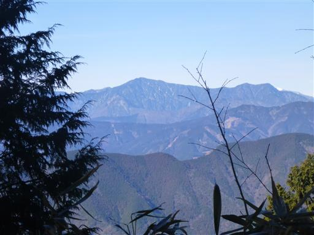
登山道を少し戻ると富士山の姿がきれいに見える。
本日は雲一つない快晴だ。
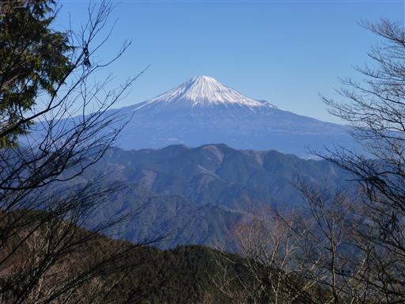
昼食をとったら山頂出発。最初は笹の中の道だ。
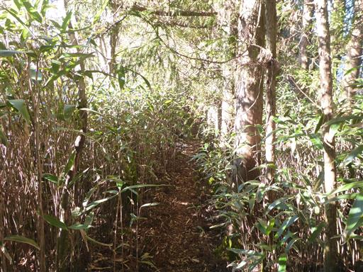
すぐに登山道は植林地帯の中になる。
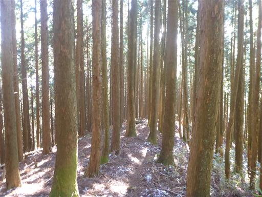
駒引峠に到着。安倍奥東山稜もこの辺りまで来ると植林地帯だらけで、
歩いていても少々趣に欠ける。
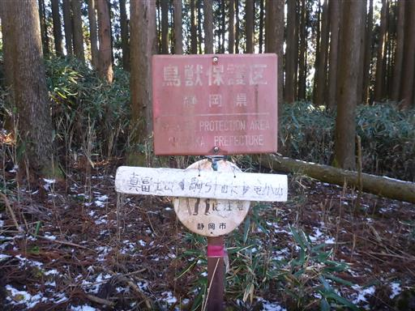
足元に石仏が祀られているが残念ながら頭が無い。
文政六と彫られている。1823年で江戸時代だ。
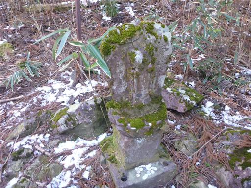
ここからは林道のような広い道になる。
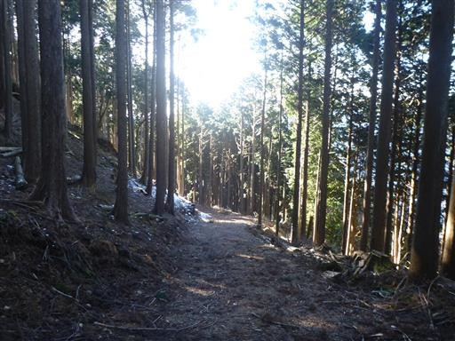
周囲はミツマタが多い。
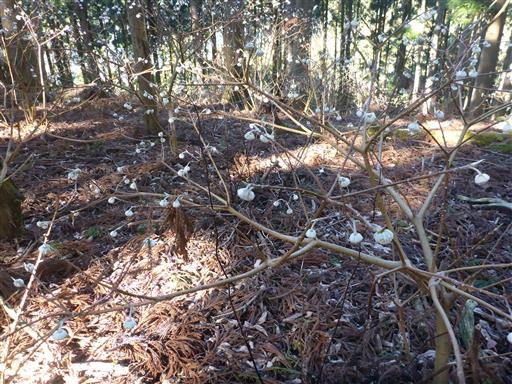
地図を見ると、どうやら駒引峠から登山道を間違えたようだ。
このまま下れそうなので引き返さずにそのまま進む。
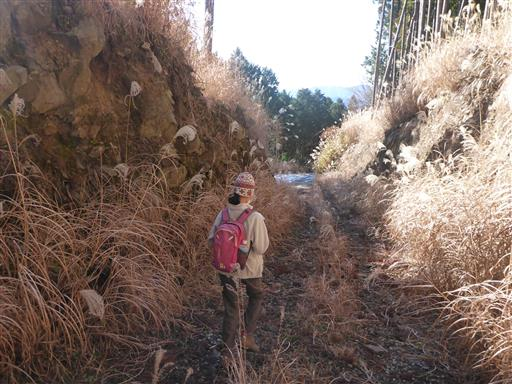
車道に降り立つ。つまらない遠回り道を歩いてしまった。
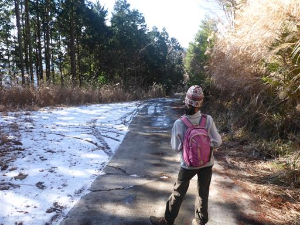
車道を歩くと正規の登山口に出てくる。
ここに標識は無く、登りの人も道を間違えそうだ。
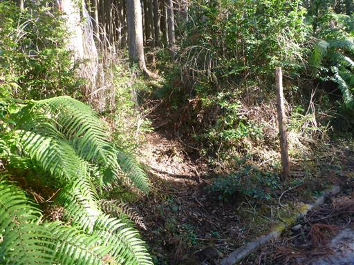
周囲の山々が美しい。
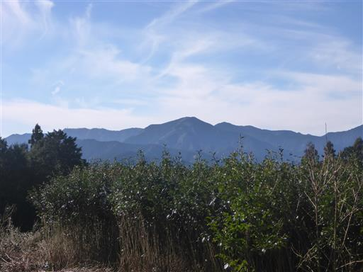
この辺りは放置され荒れ果てたお茶畑が広がっている。
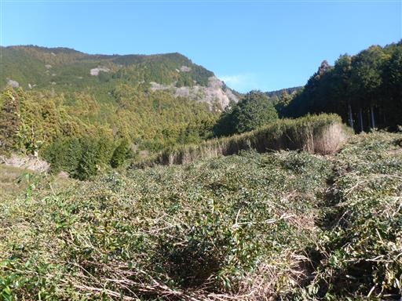
集落に近くなると路駐地帯になる。
空き地の存在を知らない人や停められなかった人が、ここに停めているようだ。
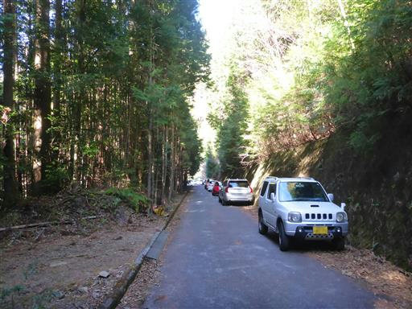
水月院の駐車場に、登山者は停めないように書かれている。
先ほどの路駐と合わせて、集落の方たちと登山者の間で軋轢があるようだ。
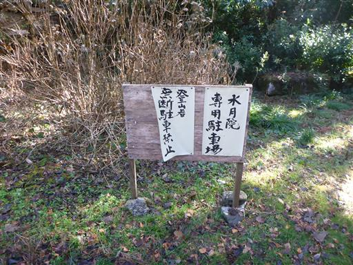
車を停めた空き地に戻ってきて、歩いてきた山々を眺める。
本日は何といっても氷瀑が素晴らしい山だった。
一方、富士見岳からの展望は思ったほどではなく、登山道も少々面白味に欠けた山だった。
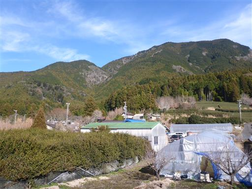